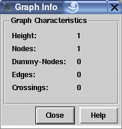

Manual
Graph Info Dialog Window
This dialog window is used to show some statistic information about the graph visualized in the base window where this dialog was invoked.
-
Height
Number of horizontal node levels in the graph visualization (or vertical levels for other layout orientations). -
Nodes
Number of regular nodes in the graph, without invisible dummy nodes. -
Dummy-Nodes
Number of invisible dummy nodes in the graph. Dummy nodes are generated automatically in a hierarchical layout to fill long span edges at each passed level. Read more about graph layout in the concepts document. -
Edges
Number of edges between nodes in the graph. Automatically generated edges from and to dummy nodes (i.e. the segments of long span edges) are not counted here. -
Crossings
Number of crossings between edges in the graph. You can try to reduce the crossings by starting the graph layout algorithm with menu Layout/Improve All.
Dialog Elements of the Graph Info Window
-
Close
Push button to close the info dialog without performing any action. -
Help
Push button to start the online help system with this page.
Copyright © 2005, Universität Bremen. All rights reserved.